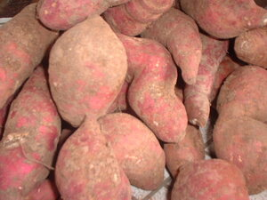

kasilè 
/kasilɔʔ/
n.
“sweet_potato”
n.
Ipomoea_batatas
sweet potato
Ka kasilè iyan ka pinamula ne egdul-ug wey egmalapung su egmanusugpang ka ka lawa wey egmasalig e. Nakalkalasi ka behas kayi sumalè te kalasiyan din wey nalein-lein degma ka dewun din. Seini ka keuyahan te me menubu su egtubu seini ne pinamula te minsan hendei wey egkakeen degma ka behas wey ka dewun kayi.
Maluag ka pinamula ney ne kasilè piru warè pad behas sikan naa ka egkabitil key kuntee ne masumpit.
We have a wide sweet potato plantation but it doesn't yet yeild a crop that is why we are now in great famine.
Wrd.Gloss: sweet_potato
Cult. A spreading vine with purplish white flowers (4-5 cm. long) similar to the morning glory and alternating triangular leaves (6-14 cm. long) of varying shapes.
Data Qual: Brown 3, 260
Spec. lumbey
Eng. sweet potato; potato, sweet; kumera; vegetable variety
Tag. kamóte
Ceb. kamote; camote
Ilo.: kamote; kamotit
Sarangani: kesilaʔ
WBM: kesilaʔ
Ilianen: kesilaʔ
Tigwanon: kasileʔ
Cotabato Manobo: katilaʔ
Tagbawa: kasilaʔ
Obo: kasila
Proto: kasilaʔ
OCM: Vegetable Production (244), Flora (137)
DDP: Grass, herb, vine (1.5.3)
Online dict status: -
Usage level: B
Updated by: RJH,AAA,TME,RJH,QDL
Last updated: 13/Oct/2009
"kasile" in text "Prophecy About Future"
"kasile" in healthbook "Keilangan ka meupiya neg kakeen"
This page last updated: 19/May/2012
Copyright © 2009-2010, Matigsalug Language Christian Association, Inc